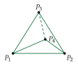
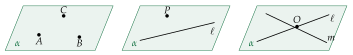

At school we learned many geometric facts: that the angles of a triangle add up to 180∘, that the area of a triangle is base times height over two, that in a right triangle a2+b2=c2. In this course knowing them is not enough: we want to know why they are true, and that means proving them. In this chapter we explain what a mathematical theory is, what a proof is, and which proof strategies are used most. The examples are deliberately simple, almost all with integers, so that the attention stays on the structure of the argument.
If we tried to define every word we use, we would fall into a vicious circle or an infinite chain: “point” would be defined with other words, which would be defined with others, and so on without end. The same happens with statements: if each one must be proved from others, at some point we have to start. A mathematical theory solves both problems by accepting a starting point without defining or proving it.
A mathematical theory (or axiomatic system) consists of:
Primitive terms: objects and relations that are not defined. In geometry: point, line, plane, the relation lying on and the relation being between.
Axioms or postulates: statements about the primitive terms that are accepted without proof. For example: “through two distinct points there passes a unique line”.
Rules of inference: the logical rules that allow us to deduce new statements from those already accepted (section 0.2).
Definitions: new names for objects built from the previous ones. For example: “a triangle is the union of the three segments determined by three noncollinear points”.
Proved results: statements deduced from the axioms, the definitions and the results already proved, by means of the rules of inference.
Proved results get different names according to their role; the difference is a matter of custom, not of logic:
a theorem is an important result;
a proposition is a result of lesser importance;
a lemma is an auxiliary result, proved in order to use it in the proof of another one;
a corollary is an almost immediate consequence of a theorem.
A proof of a proposition q is a finite sequence of propositions p1,p2,…,pn=q in which each pi is an axiom, a definition, a result already proved, a hypothesis of the statement, or is obtained from earlier propositions in the list by means of a rule of inference.
In practice nobody writes proofs as numbered lists of formulas; they are written in prose, as an argument addressed to an attentive reader. But the definition says what is essential: every step must have a justification, and the justification can only be something already accepted or already proved. When in geometry we write “by SAS” or “by the exterior angle theorem”, we are saying where that step comes from.
To see how all this works without the weight of our intuitions, consider a theory with two primitive terms, point and line, one primitive relation, lying on, and the following axioms:
There are exactly four points.
Each pair of distinct points lies on exactly one line.
Each line contains exactly two points.
Theorem. There are exactly six lines.
Proof. By A2, each pair of points corresponds to exactly one line. By A3, each line contains exactly one pair of points, so this correspondence between pairs of points and lines is a bijection. By A1, the number of pairs of points is (24)=6. Hence there are six lines. □
Notice that the proof uses no idea of what a point or a line “is”. A model of the theory is any interpretation that makes the axioms true: for example, the four vertices of a tetrahedron and its six edges, or four people and the six possible handshakes among them. The theorem holds in every model.

Most theorems have the form p⟹q. In a direct proof we assume that the hypothesis p is true and, chaining justified steps, we reach the conclusion q: p⟹p1⟹p2⟹⋯⟹q. There is no need to consider the case where p is false, because then the conditional is true anyway.
For the examples we will use two definitions. An integer n is even if there is an integer k such that n=2k, and odd if there is an integer k such that n=2k+1. Every integer is even or odd, but not both. We say that a divides b, and we write a∣b, if there is an integer k with b=ak.
If n is an odd integer, then n2 is odd.
Suppose that n is odd. By definition there is an integer k such that n=2k+1. Then n2=(2k+1)2=4k2+4k+1=2(2k2+2k)+1. Since m=2k2+2k is an integer, n2=2m+1 is odd.
Checking that 12=1, 32=9, 52=25 and 72=49 are odd does not prove the proposition: it only shows four cases out of infinitely many. The proof above, on the other hand, works for every odd n at once, because it works with an arbitrary k.
Let a,b,c be integers. If a∣b and b∣c, then a∣c.
By hypothesis there are integers k and l such that b=ak and c=bl. Substituting the first equality into the second, c=(ak)l=a(kl). Since kl is an integer, a∣c.
Let us prove that if a∣b and b∣c, then a∣c (integers; a∣b means that b=ak for some integer k).
Hypothesis: a∣b and b∣c. Conclusion: a∣c.
Proof. Since a∣b, there is an integer k with b=ak. Since b∣c, there is an integer m with c=bm.
Substituting, c=(ak)m=a(km), and km is an integer. Hence a∣c. □
Since p⟹q is equivalent to ¬q⟹¬p (Theorem 0.2.2), to prove the first it is enough to prove the second: we assume the conclusion is false and deduce that the hypothesis is false. This method is convenient when the negation of the conclusion gives more information than the hypothesis itself.
Let n be an integer. If n2 is even, then n is even.
We prove the contrapositive: if n is not even, then n2 is not even. If n is not even, it is odd, and by Proposition 1.2.1 n2 is odd; that is, n2 is not even.
Attempting the direct proof shows why the contrapositive is more convenient here: from “n2=2k” it is not easy to extract information about n, whereas from “n=2k+1” we compute n2 immediately.
Let x,y be real numbers. If x+y>10, then x>5 or y>5.
Contrapositive: if not (x>5 or y>5), that is, by De Morgan, if x≤5 and y≤5, then x+y≤10, which is the negation of x+y>10.
In a proof by contradiction (reductio ad absurdum), to prove q we assume ¬q and deduce a contradiction, that is, a statement of the form r∧¬r. Since a contradiction is never true, the assumption ¬q must be false, and by the excluded middle q is true. If the proposition is a conditional p⟹q, we assume p∧¬q (which is the negation of the conditional) and look for the contradiction.
There is no rational number whose square is 2.
Suppose, for a contradiction, that there is a rational x with x2=2.
We can write x=ba with a,b integers, b=0, and the fraction in lowest terms: a and b have no common factors greater than 1.
From b2a2=2 we get a2=2b2. So a2 is even, and by Proposition 1.3.1 a is even: a=2c for some integer c.
Substituting, 4c2=2b2, that is, b2=2c2.
Then b2 is even and, again, b is even.
But then 2 is a common factor of a and b, which contradicts that the fraction was in lowest terms.
Hence no such rational exists.
This fact has a deep geometric meaning. If the side of a square measures 1, by the Pythagorean theorem its diagonal measures 2, and the theorem above says that there is no unit segment, however small, that fits a whole number of times both in the side and in the diagonal: side and diagonal are incommensurable. The discovery, which tradition attributes to the Pythagoreans, forced the Greeks to develop a theory of proportions that did not depend on whole numbers; that theory is the one Euclid sets out in Book V of the Elements.
There are infinitely many prime numbers.
Suppose, for a contradiction, that there are only finitely many primes: p1,p2,…,pn.
Consider the number N=p1p2⋯pn+1. Since N>1, it has some prime divisor, and that prime must be one of the list, say pi.
Then pi divides N and divides the product p1⋯pn, so it divides their difference, which is 1.
This is impossible, because pi≥2.
The contradiction shows that the list of primes cannot be finite.
The two techniques look alike: both start by assuming ¬q. The difference is at the end. In the contrapositive the goal is fixed in advance: we must reach ¬p. In a proof by contradiction we may reach any contradiction, whether with the hypothesis, with an axiom or with a theorem already proved. In geometry we will use contradiction a lot; a typical example is proving that two lines intersect by assuming they are parallel and concluding that a triangle would have two right angles.
If the hypothesis can be split into several cases that exhaust all possibilities, p≡p1∨p2∨⋯∨pk, it is enough to prove the conclusion in each case separately (Theorem 0.2.2, item 8): (p1∨p2)⟹q ≡ (p1⟹q)∧(p2⟹q).
For every integer n, the number n2+n is even.
Every integer is even or odd; we analyze the two cases.
Case 1: n even. Then n=2k and n2+n=4k2+2k=2(2k2+k), which is even.
Case 2: n odd. Then n=2k+1 and n2+n=(4k2+4k+1)+(2k+1)=2(2k2+3k+1), which is even.
In both cases n2+n is even.
For all real numbers x, y: ∣x+y∣≤∣x∣+∣y∣.
Recall that ∣a∣=a if a≥0 and ∣a∣=−a if a<0; in both cases a≤∣a∣ and −a≤∣a∣.
Case 1: x+y≥0. Then ∣x+y∣=x+y≤∣x∣+∣y∣.
Case 2: x+y<0. Then ∣x+y∣=−x−y=(−x)+(−y)≤∣x∣+∣y∣.
Proof by cases appears whenever the object can take several forms: an integer is even or odd; a real number is negative, zero or positive; the remainder on division by 3 is 0, 1 or 2. In geometry it will be the same: the foot of an altitude can fall inside or outside the side. A good habit is to always ask yourself: is the case I am looking at the only one possible?
To prove ∃x, p(x) there are two paths. In a constructive proof we explicitly exhibit an object satisfying p. In a nonconstructive proof we show that one must exist without saying which (for example, by contradiction).
To prove uniqueness, the usual scheme is: assume two objects x and y satisfying p and prove that x=y. Another option is to assume there are two distinct ones and reach a contradiction.
Let a,b∈R with a=0. The equation ax+b=0 has a unique real solution.
Existence. The number x0=−ab is defined because a=0, and ax0+b=−b+b=0.
Uniqueness. If x1 and x2 are solutions, ax1+b=0=ax2+b, hence a(x1−x2)=0. Since a=0, x1−x2=0, that is, x1=x2.
Let us prove that the equation 3x+5=11 has a unique real solution.
Existence. x=2 works: 3⋅2+5=11.
Uniqueness. If x and y are solutions, 3x+5=11=3y+5; subtracting 5, 3x=3y, and dividing by 3, x=y.
These are two different proofs. In geometry the same will happen with the midpoint of a segment, the bisector of an angle or the perpendicular through a point.
Let us prove that there are irrational numbers a and b such that ab is rational. Consider 22. There are two cases:
if 22 is rational, it is enough to take a=b=2;
if 22 is irrational, we take a=22 and b=2: ab=(22)2=22=2, which is rational.
In either case such a and b exist, although the proof does not tell us which case we are in.
To prove that a universal statement ∀x, p(x) is false it is enough to exhibit a single x that does not satisfy p; that x is a counterexample. The justification is the negation of quantifiers: ¬(∀x, p(x))≡∃x, ¬p(x).
“For every natural number n, the number n2+n+41 is prime.” It is true for n=1,2,…,39, but for n=40 we get 402+40+41=412, which is not prime. Forty favorable cases were not enough; a single unfavorable case is enough to disprove it.
“If a2=b2, then a=b.” It is false: a=1, b=−1 is a counterexample. The correct statement is a=b or a=−b.
“If n is prime, then 2n−1 is prime.” It works for n=2,3,5,7, but 211−1=2047=23⋅89.
Move the slider: how many cases do we need to be sure?
To prove p⟺q we prove the two implications separately, p⟹q (the “forward” direction, ⇒) and q⟹p (the “backward” direction, ⇐), each with whatever method is convenient. When there are several equivalent propositions p1,…,pk it is usually economical to prove a cycle p1⟹p2⟹⋯⟹pk⟹p1.
Let n be an integer. Then n is even if and only if n2 is even.
Before starting, write clearly what the hypothesis is and what the conclusion is. In geometry, also draw a picture and mark the hypothesis on it.
Announce the method: “we argue by contradiction”, “we prove the contrapositive”, “there are two cases”. The reader will thank you.
Introduce each object before using it: “let n be an even integer; then n=2k for some integer k”.
Justify every step. If a step has no justification, it is not a step yet.
Finish by saying what was proved, and mark the end with ■.
About two thousand three hundred years ago Euclid of Alexandria gathered in the thirteen books of the Elements the geometry known in his time, organized as a chain of propositions deduced from a few definitions, postulates and common notions. It was the first great example of a mathematical theory, and for more than two thousand years the model of what it means to reason rigorously. At the end of the 19th century, David Hilbert reviewed the building and found that Euclid used, without saying so, facts that “could be seen” in the figures but did not follow from his postulates; for example, that a line entering a triangle through one side has to leave through another. Hilbert proposed a complete system of axioms, grouped into five families: incidence, order, congruence, continuity and parallelism.
In this chapter we present those postulates, in a version that uses the real numbers to measure segments and angles (an idea of George D. Birkhoff), and with them the first definitions and theorems: segments, rays, half-planes, angles, perpendicularity and the angle bisector.
The primitive terms of our geometry are point, line and plane, and the primitive relations are lying on (a point lies on a line or on a plane) and the notion of distance, which we will introduce in the next section. Lines and planes are sets of points; the set of all points is space.
We will use capital letters A,B,P,Q,… for points, lowercase letters ℓ,m,n,r,… for lines and Greek letters α,β,π,… for planes. A line through the points A and B is denoted AB.
A set of points is collinear if there is a line containing all of them, and coplanar if there is a plane containing all of them.
Two distinct lines are intersecting if they have a point in common.
Two lines are parallel if they are coplanar and have no points in common, or if they are equal. We write ℓ∥m.
Every line has at least two points. Every plane has at least three noncollinear points. Space has at least four noncoplanar points.
Through two distinct points there passes exactly one line.
Through three noncollinear points there passes exactly one plane.
If two distinct points lie in a plane, the line containing them lies in that plane.
If two distinct planes meet, their intersection is a line.
Postulates I3–I5 are about space and we will use them mainly in chapter 8. In the chapters on plane geometry we will work inside a fixed plane, unless stated otherwise.
If two distinct lines intersect, their intersection is exactly one point.
Let ℓ=m be two intersecting lines; by hypothesis they have at least one point in common, P. Suppose, for a contradiction, that they have another common point Q=P. Then ℓ and m are two lines through the distinct points P and Q, and by postulate I2 they are the same line. This contradicts ℓ=m. Hence ℓ∩m={P}.
If P is a point not on the line ℓ, there is exactly one plane containing ℓ and P.
Existence. By I1, ℓ has two distinct points A and B. The points A, B and P are not collinear: if they were, the line containing them would be AB=ℓ (by I2) and P would lie on ℓ. By I3 there is a plane α containing A, B and P, and by I4 α contains ℓ.
Uniqueness. Every plane containing ℓ and P contains the three noncollinear points A, B, P; by the uniqueness in I3, that plane is α.
If two distinct lines intersect, there is exactly one plane containing them.
Let ℓ∩m={O} and let P be a point of m different from O (it exists by I1). Then P∈/ℓ (otherwise O and P would be two common points, against Theorem 2.1.3). The plane α containing ℓ and P contains O and P, so it contains m by I4. Any other plane containing ℓ and m contains ℓ and P, and by the previous theorem it is α.

The incidence postulates alone do not say that lines have infinitely many points: the model of Example 1.1.3 (four points, six two-point lines, where planes are interpreted as the four faces of the tetrahedron) satisfies almost all of them. The properties we expect of a line (that it is infinite, continuous, ordered) come from the postulates of the next section.
Next week: Measuring: distance, order and angles
© 2026 Santiago Alzate Suárez. Original work; all rights reserved. Reproduction or distribution without permission is prohibited, and any use must credit the author.